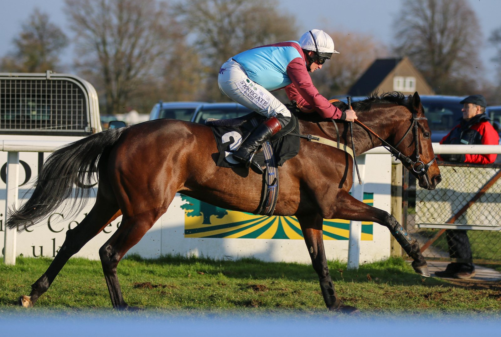

Nueva York sube a 3 a 1 el tope entre premio y precio en las carreras de reclamar
La Comisión de Juego de Nueva York (NYSGC) aprobó el viernes, por unanimidad, que los hipódromos de la NYRA y Finger Lakes eleven de 2,8 a 3 a 1 el tope entre premio y precio de reclamo.

Ese límite se vigila desde la temporada 2011-12 de Aqueduct Racetrack, en la que 21 caballos sufrieron lesiones catastróficas. Un grupo de trabajo del gobernador sobre seguridad equina concluyó entonces que había que desincentivar la inscripción de caballos de dudosa integridad física o poco competitivos en reclamares de nivel bajo con premios inflados por los ingresos del juego. En la NYRA, esas relaciones iban de 3,9 a 5,3 a 1.
"Por ejemplo, los caballos inscritos en una carrera de reclamar de 7.500 dólares corrían por premios de entre 30.000 y 40.000 dólares, aproximadamente cuatro o cinco veces su valor", recordó Robert Williams, director ejecutivo de la NYSGC, en la reunión del 9 de octubre.
El primer tope fue de 1,65 a 1. La NYRA alegó desventaja frente a otros hipódromos del Atlántico medio con premios más altos en reclamares, y la comisión lo subió a 2 a 1. En 2018, ante quejas parecidas por la competencia por las inscripciones, pasó a 2,8 a 1. A cambio, se exigieron controles adicionales de aptitud: caballos que volvían de un parón largo, que bajaban bruscamente de categoría o con trabajos dudosos.
Ocho años después, la NYRA y Finger Lakes pidieron otro aumento, con el argumento de que los avances en protocolos de seguridad y gestión del riesgo bastan para compensarlo. El doctor Scott Palmer, director médico equino de la comisión, revisó los datos de seguridad de los reclamares neoyorquinos de los últimos 16 años. Concluyó que pasar a 3 a 1 "no es probable que aumente significativamente el riesgo" de muertes en carrera, con tres condiciones.
Que el número de reclamares se mantenga similar al de carreras que no lo son; que sigan vigentes los protocolos de seguridad reforzados en la NYRA y Finger Lakes, y que las tasas de muertes en carrera se revisen cada año.
Cuando un comisionado propuso revisar las cifras con más frecuencia, Palmer respondió que ya se rastrean tendencias de forma periódica: "Es una evaluación en tiempo real. Cada vez que veamos un repunte o un aumento de estas muertes, lo revisaremos en ese momento y consideraremos retirar ese aumento".
Por Martín Larrañeta